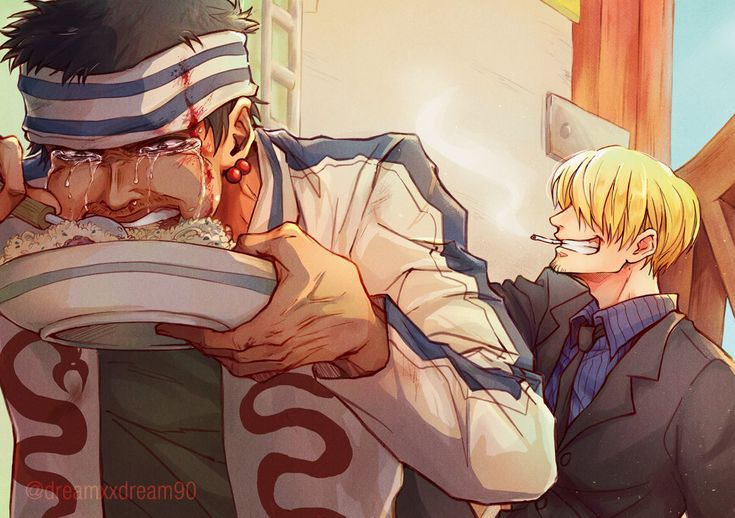

O cozinheiro chama-se:
Vinsmoke Sanji
"...Eu não dou a mínima para quem você é ou o que fez. Se você está com fome, eu vou te alimentar."
Sanji diz para Gin, um pirata ladrão, gravemente ferido, que se alimenta aos prantos após ser salvo da morte por um prato de comida servido por ele.
"Eu sou um cozinheiro. Minha função é alimentar quem está com fome. O que ele vai fazer depois que a barriga estiver cheia... não é problema meu."